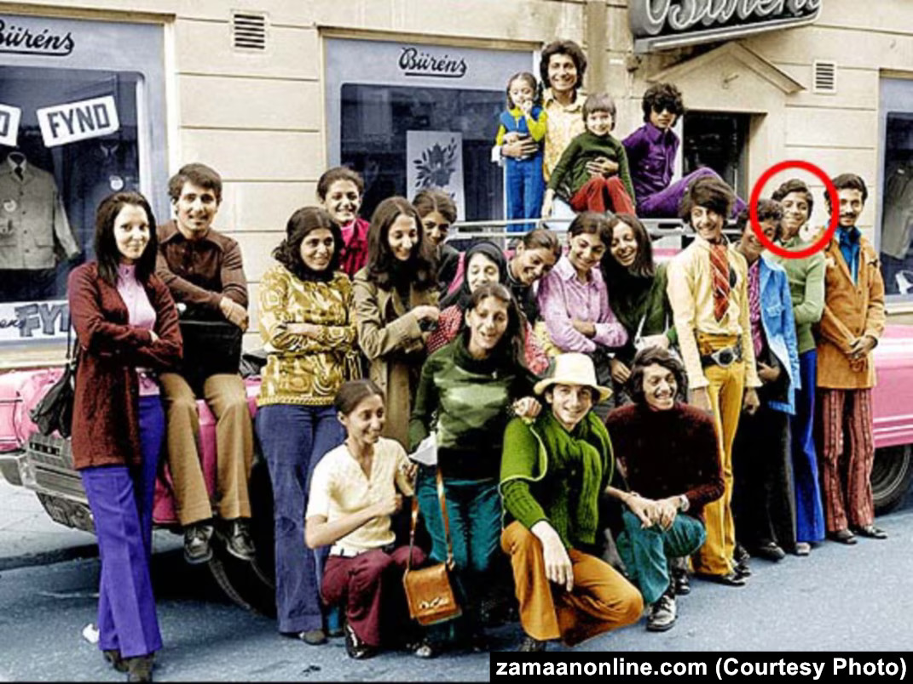

Barbara Kellerman argues that leadership cannot be understood in isolation from followership. While attention often focuses on leaders, followers play an equally important role in enabling organisational outcomes. Destructive leadership becomes possible when followers choose compliance, participation, or active support rather than resistance.
Al-Qaeda's success depended not only on Osama bin Laden's leadership but on thousands of followers who transformed ideology into action. Recruitment networks, financiers, propagandists, trainers, and attackers all contributed to the organisation's capacity for violence. Without followers willing to participate, the leader's vision would have remained little more than rhetoric.
Kellerman's framework therefore shifts responsibility away from a single individual and towards the wider organisational system. Followers are not merely victims of manipulation; they can also become active enablers of harm.
| Type | Description | Al-Qaeda Example |
|---|---|---|
| Isolates | Detached and uninvolved. | Individuals aware of extremist activity but unwilling to engage. |
| Bystanders | Observe but do not intervene. | Communities aware of recruitment activities yet remaining passive. |
| Participants | Provide limited support. | Fundraisers, recruiters and facilitators. |
| Activists | Strongly engaged supporters. | Cell leaders, propagandists and trainers. |
| Diehards | Total commitment to the cause. | 9/11 hijackers and suicide attackers. |

Kellerman's most extreme category is the diehard follower. Diehards display unwavering commitment to a leader, ideology, or organisation and are willing to make extraordinary sacrifices in pursuit of the cause.
The nineteen hijackers responsible for the September 11 attacks exemplify this category. Their willingness to sacrifice their lives demonstrates how personal identity became inseparable from organisational objectives.
This transformation reflects the culmination of toxic leadership, organisational conditioning, and ideological reinforcement. Followers no longer evaluated actions through individual moral reasoning but through the collective identity provided by the organisation.
The case demonstrates that destructive leadership cannot be separated from destructive followership. While bin Laden provided vision and direction, followers provided legitimacy, labour, and operational capability.
Kellerman's framework reveals that followers possess agency. They are capable of resistance, withdrawal, or opposition. The persistence of Al-Qaeda therefore reflects not only the presence of a destructive leader but also the willingness of followers to support and sustain the organisation.
Understanding followership expands accountability beyond leadership and provides a more complete explanation of organisational harm.